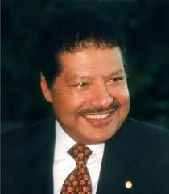

Ahmed Hassan Zewail, born in Egypt 1946, won a Nobel Prize in 1999 in Chemistry. He is known as the father of Femtochemistry. He studied in Alexandria, where he received a Bachelor’s degree and a MSc in Chemistry. He later completed his PhD at the University of Pennsylvania and a post-doctoral fellowship at the University of California. Zewail became a naturalized U.S. citizen and was nominated to President Barack Obama’s Presidential Council of Advisors on Science and Technology (PCAST). He won the Nobel Prize for his works in chemical reactions across femtoseconds and was awarded the Albert Einstein World Award of Science along with more than 30 other honorary degrees.